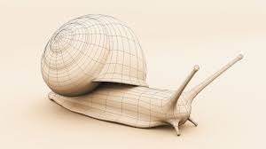
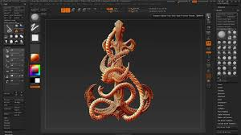
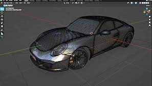
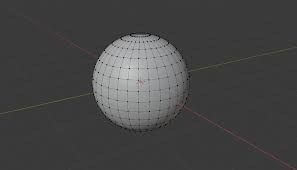

Трёхмерная графика — раздел компьютерной графики, посвящённый методам создания изображений или видео путём моделирования объектов в трёх измерениях. 3D-моделирование — процесс создания трёхмерной модели объекта. Задача 3D-моделирования — разработать зрительный объёмный образ желаемого объекта. При этом модель может как соответствовать объектам из реального мира (автомобили, здания, ураган, астероид), так и быть полностью абстрактной (проекция четырёхмерного фрактала). Графическое изображение трёхмерных объектов отличается тем, что включает построение геометрической проекции трёхмерной модели сцены на плоскость (например, экран компьютера) с помощью специализированных программ. Однако с созданием и внедрением 3D-дисплеев и 3D-принтеров трёхмерная графика не обязательно включает в себя проецирование на плоскость.
Трёхмерная графика активно применяется для создания изображений на плоскости экрана или листа печатной продукции в науке и промышленности, например, в системах автоматизации проектных работ (САПР; для создания твердотельных элементов: зданий, деталей машин, механизмов), архитектурной визуализации (сюда относится и так называемая «виртуальная археология»), в современных системах медицинской визуализации.
Трёхмерная графика обычно имеет дело с виртуальным, воображаемым трёхмерным пространством, которое отображается на плоской, двухмерной поверхности дисплея или листа бумаги. В настоящее время известно несколько способов отображения трёхмерной информации в объёмном виде, хотя большинство из них представляет объёмные характеристики весьма условно, поскольку работают со стереоизображением. Из этой области можно отметить стереоочки, виртуальные шлемы, 3D-дисплеи, способные демонстрировать трёхмерное изображение. Несколько производителей продемонстрировали готовые к серийному производству трёхмерные дисплеи. Но, чтобы насладиться объёмной картинкой, зрителю необходимо расположиться строго по центру. Шаг вправо, шаг влево, равно как и неосторожный поворот головы, карается превращением трёхмерности в несимпатичное зазубренное изображение. Решение этой проблемы уже созрело в научных лабораториях. Германский Институт Фраунгофера демонстрировал 3D-дисплей, при помощи двух камер отслеживающий положение глаз зрителя и соответствующим образом подстраивающий изображение, в этом году[когда?] пошёл ещё дальше. Теперь отслеживается положение не только глаз, но и пальца, которым можно «нажимать» трёхмерные кнопки. А команда исследователей Токийского университета создали систему, позволяющую почувствовать изображение. Излучатель фокусируется на точке, где находится палец человека, и в зависимости от его положения меняет силу акустического давления. Таким образом, становится возможным не только видеть объёмную картинку, но и взаимодействовать с изображёнными на ней предметами.
 |
 |
|
|  |  |
 |
|  |  | |